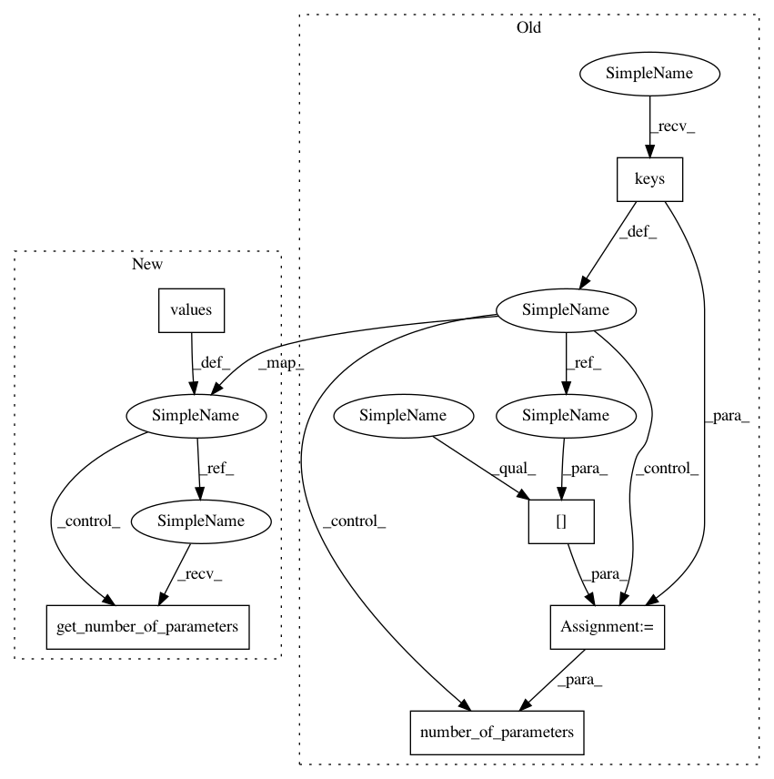

e8aff8a890da8670ea8af8783caf3984c4dde558,dipy/align/tests/test_transforms.py,,test_get_identity_parameters,#,206
Before Change
def test_get_identity_parameters():
transforms = transform_type.keys()
for dim in [2, 3]:
for transform in transforms:
t = transform_type[transform]
n = number_of_parameters(t, dim)
theta = get_identity_parameters(t, dim)
expected = np.eye(dim + 1)
actual = param_to_matrix(t, dim, theta)
After Change
def test_get_identity_parameters():
for transform in regtransforms.values():
n = transform.get_number_of_parameters()
dim = transform.get_dim()
theta = transform.get_identity_parameters()
expected = np.eye(dim + 1)
In pattern: SUPERPATTERN
Frequency: 3
Non-data size: 6
Instances
Project Name: nipy/dipy
Commit Name: e8aff8a890da8670ea8af8783caf3984c4dde558
Time: 2015-02-25
Author: jomaroceguedag@gmail.com
File Name: dipy/align/tests/test_transforms.py
Class Name:
Method Name: test_get_identity_parameters
Project Name: nipy/dipy
Commit Name: e8aff8a890da8670ea8af8783caf3984c4dde558
Time: 2015-02-25
Author: jomaroceguedag@gmail.com
File Name: dipy/align/tests/test_transforms.py
Class Name:
Method Name: test_param_to_matrix_2d
Project Name: nipy/dipy
Commit Name: e8aff8a890da8670ea8af8783caf3984c4dde558
Time: 2015-02-25
Author: jomaroceguedag@gmail.com
File Name: dipy/align/tests/test_transforms.py
Class Name:
Method Name: test_param_to_matrix_3d